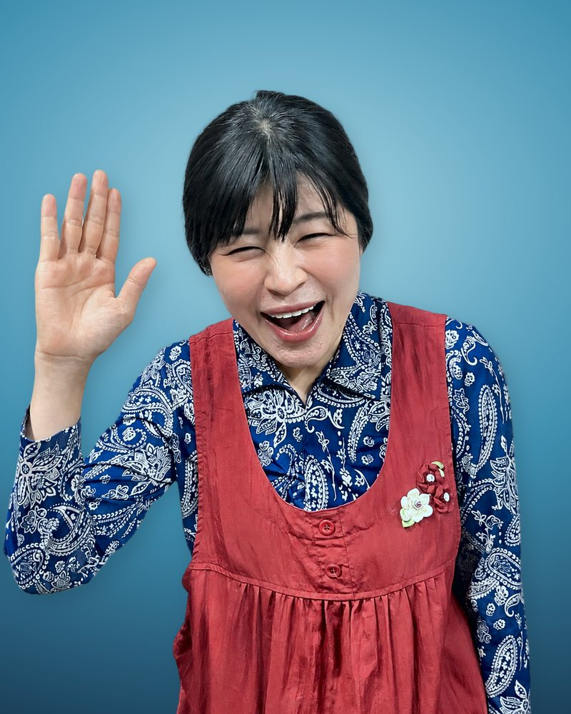
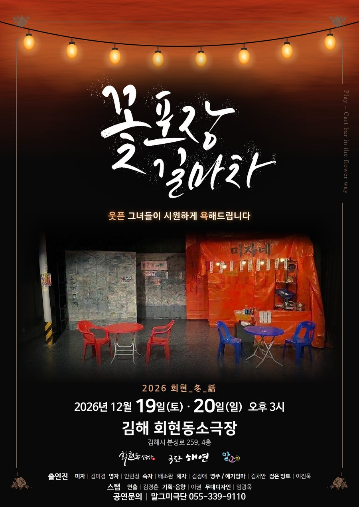
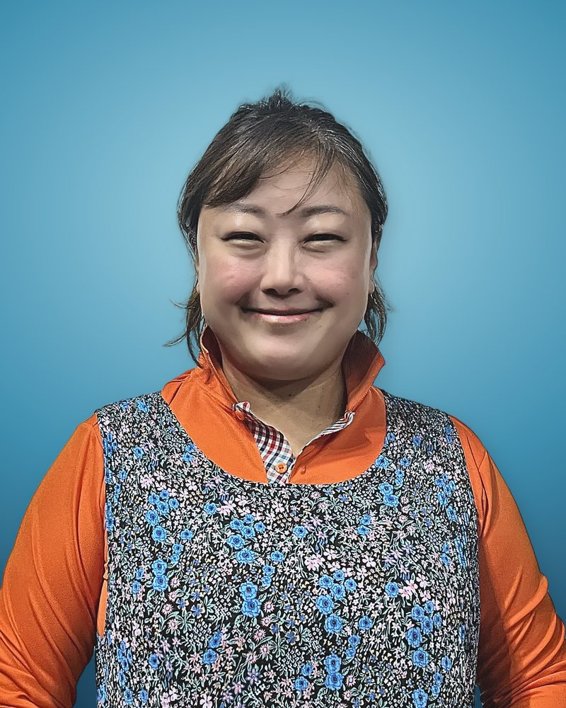
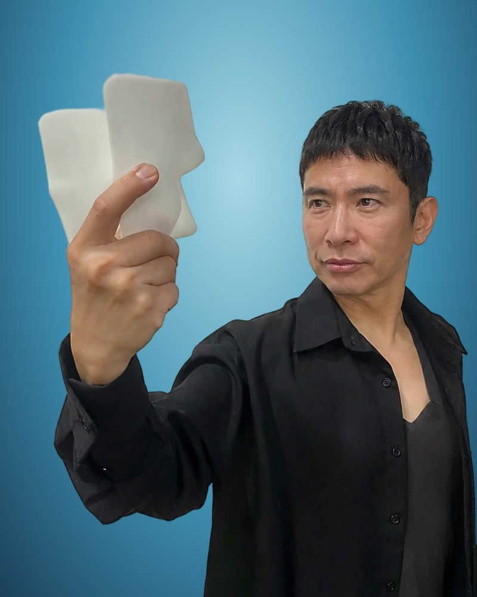

미자
김미경
입은 거칠어도 정 많은 전라도 아지매. 20년 시장 친구들의 싸움을 말리며 포장마차를 꾸려 가는 여자
공연 회차
회현_冬_話는 ㈜회현동극장이 2021년부터 해마다 연말에 여는 나눔 공연으로, 올해로 다섯 번째입니다. 한 해 동안 받은 사랑을 지역에 돌려드리기 위해 공연 관람료와 후원금은 연말 불우이웃 돕기에 전액 기부합니다. 올해는 회현동소극장이 처음 무대에 올렸던 『꽃포장 길마차』로 찾아갑니다.

시장 골목 포장마차 거리. 20년을 이웃으로 부대껴 온 미자, 영자, 숙자, 혜자는 하루가 멀다 하고 욕을 주고받는 사이다.
아픈 딸의 수술비를 몸에 지니고 다니던 영자의 돈이 하루아침에 사라지고, 의심은 가장 가까운 친구들에게로 향한다. 20년 우정이 흔들리는 사이, 포장마차 주변을 맴도는 낯선 애기엄마가 나타나는데…
거친 욕 속에 감춰 둔 상처와 의리, 서로를 식구로 품어 가는 시장 여자들의 웃기고 슬픈 이야기.

미자
입은 거칠어도 정 많은 전라도 아지매. 20년 시장 친구들의 싸움을 말리며 포장마차를 꾸려 가는 여자
영자
힘 세고 눈에 힘 «짱짱»한 천하영자. 아픈 딸의 수술비를 홀로 마련하기 위해 억척같이 살아가는 여자

숙자
다혈질에 웃음 호탕한 철이 엄마. 아들 대학 등록금을 벌려고 아구찜집에서 일하는 여자
혜자
애교와 눈치로 사는 시장의 «여시». 다방을 접고 황진이 노래방을 차린 막내
영주 · 애기엄마 (1인 2역)
자존심 하나로 버텨 온 미자네 포장마차 단골 «선생님». 폭력을 피해 시장을 맴도는 낯선 애기엄마

그림자
말없이 무대를 가로지르는 그림자
남겨 주신 번호로 예약 확인 연락을 드립니다. 관람료는 당일 현장에서 받습니다.